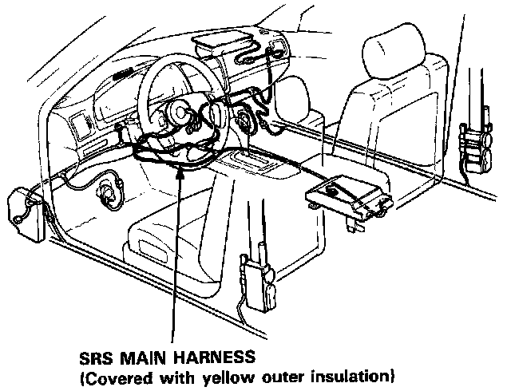

Supplemental Restraint System
SUPPLEMENTAL RESTRAINT SYSTEM (SRS)The Legend Coupe SRS includes a driver's side airbag, located in the steering wheel hub, a front passenger's airbag, located in the dashboard above the glove box, and seat belt pretensioners, located in the seat belt retractors. The following items include, or are located near, SRS components.
- Heater Control Panel
- Blower Unit
- Heater-Evaporator Unit
- Climate Control Unit (Automatic Climate Control)
- Aspirator Fan Motor (Automatic Climate Control)
- In-Car Temperature Sensor (Automatic Climate Control)
Servicing, disassembling or replacing these items will require special precautions and tools, and ACURA therefore recommends they be done only by an authorized ACURA dealer.
WARNING:
- To avoid rendering the SRS inoperative, which can lead to personal injury or death in the event of a severe frontal collision, ACURA states that all maintenance must be performed by an authorized ACURA dealer.
- Improper maintenance, including incorrect removal and installation of the SRS, can lead to personal injury caused by unintentional activation of the airbag and seat belt pretensioners.
- All SRS electrical wiring harnesses are covered with yellow outer insulation. Related components are located in the steering column, center armrest and dashboard lower panel. Do not use electrical test equipment on these circuits.

CAUTION:
- All SRS wiring harnesses are covered with yellow outer insulation.
- Before disconnecting any part of the SRS wire harness, install the short connectors.
- Replace the entire affected SRS harness assembly if it has an open circuit or damage wiring.